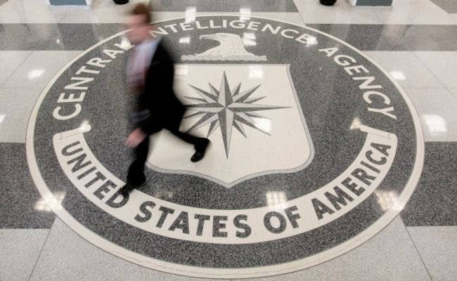

CIA Realizes It's Been Using Black Highlighters All These Years
Director Demands Investigation
 Director Demands Investigation
LANGLEY, VA—A report released Tuesday by the CIA's Office of the Inspector General revealed that the CIA has mistakenly obscured hundreds of thousands of pages of critical intelligence information with black highlighters.
According to the report, sections of the documents— "almost invariably the most crucial passages"—are marred by an indelible black ink that renders the lines impossible to read, due to a top-secret highlighting policy that began at the agency's inception in 1947.
CIA Director Porter Goss lamented the fact that the public will probably never know the particulars of several historic events, such as:
Director Demands Investigation
LANGLEY, VA—A report released Tuesday by the CIA's Office of the Inspector General revealed that the CIA has mistakenly obscured hundreds of thousands of pages of critical intelligence information with black highlighters.
According to the report, sections of the documents— "almost invariably the most crucial passages"—are marred by an indelible black ink that renders the lines impossible to read, due to a top-secret highlighting policy that began at the agency's inception in 1947.
CIA Director Porter Goss lamented the fact that the public will probably never know the particulars of several historic events, such as:
- The Cold War
- The civil-rights movement
- The growth of the international drug trade